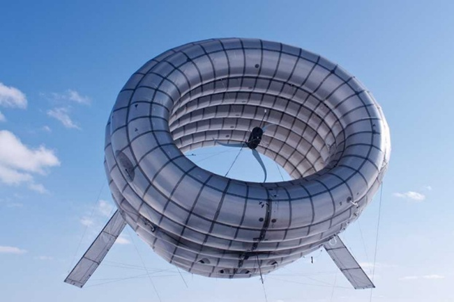
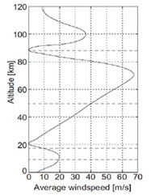
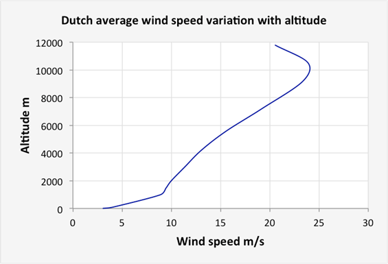
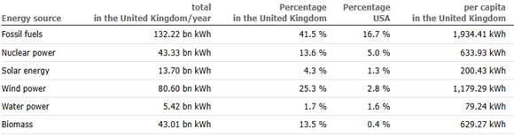

This article is an informative look at alternatives to traditional standing wind turbines and how
BATs can be used in the future for sustainable energy. Evaluating each source of energy through
different aspects of cost, impact, efficiency, and usefulness.
1 What is it?
Since 2015, onshore wind energy has been banned in the UK. The ban was only lifted in July 2024,
(GOV.UK (2024)), which begs the question of why it was banned in the first place and whether there
are any better alternatives.
I first learned about Buoyant Airborne Turbines (BAT) through an article in Wind Systems magazine.
BATs are wind turines filled with a low density gas that allow it to float high in the air.
The article said that BATs could reach heights where winds are stronger and more consistent, (staff, W.S. (2017)).
So, I decided to investigate the BAT and traditional free-standing turbines to see if the UK should
pivot towards using them.

(Matheson, R. (2014))
1.1 Evaluating cost
Initially, I started to look for how much each project cost. As stated in the magazine the BAT isn’t
fully commercially available, costing around $1.3 million (£1 million as of Nov 2024) for an
eighteen-month project, this is a very massive cost compared to the standing turbine which comes to
around £70,000, (Richardson, J. (2023)), and approximately makes 36,000kW of energy over a year.
However, something people don’t realize is the maintenance of wind turbines as the blades need to be
replaced every 20 years, and the main problem we face with disposing of the blades
is that they cannot be recycled. This is because the blades are mostly made from
fibreglass, (Rani, M., Choudhary, P., Krishnan, V. and Zafar, S. (2021)), which usually leads to them
being thrown in landfills or incinerated, neither being good for the environment. On the other hand,
the BAT turbine is made from a high-performance fabric shell and to make the turbine float it is filled with a gas
less dense than air: a high concentration of helium, (Mohammad Abobaker Khalifa, Ali, M. and Naeem, M. (2023)).
This means that the BAT can be taken down and reused however just like the standing turbine, the BAT
does use blades which again cannot be recycled but may be used in different means. Whereas the bat can
be constructed and taken down to be reused somewhere else.
1.2 Comparing Power Output
One fundamental point between the standing wind turbine and the BAT is the fact that they make power the
same way. They work on the same simple principle: wind turns the propeller-like blades of a turbine around
a rotor, which then spins a generator consequently producing electricity. The main difference is the height
at which the two operate.
 
Limpinsel, M., Kuo, D. and Vijh, A. (2018) Energy Matters. (2016)
As both the graphs show, between 0 and 10km, as the altitude increases the average windspeeds increase which
means when in contact with the wind turbines the wind will transfer much more kinetic energy at higher
altitudes compared to lower altitudes, the wind speeds at higher altitudes become much more consistent,
(Archer, C. and Caldeira, K. (2009)), making energy much more viable for long-term energy providing.
A BAT commercial-scale project is currently around 100 m taller than the current record holder for highest wind
turbine which is equipped with a generator that can produce a maximum 8MW, (staff, W.S. (2017)), this means with
an equivalent engine, the BAT can produce much higher average power with more consistency due to its higher altitude.
This however is comparing the tallest standing wind turbine, in 2014, meaning compared to average wind turbines the
power output will be much greater comparatively.
1.3 What does the Uk need?
The goal of energy sources is to as you think, to supply energy to the country and currently the UK we consume
around 287.13 billion kWh and produce 318.60 billion kWh, around 40% of which is from fossil fuels, making 30
million tons of CO2 every year.

Worlddata.info. (2014)
The BATs with an 8MW engine can make, over a period of 24hrs, 192000kWh which annually is 70176000 kWh. This means
that for BATs to fully replace fossil fuels we would need around 1900 BATs minimum. I understand that this does sound
like a lot and considering the price may be a poor choice, however I predict that over the years and with more investment
they will become cheaper. Additionally with the fact that BATs are lifted high into the air, they can even be installed
in major cities which would promote green architecture. If not that, the large surface area of BATs can be used as space
for advertising, generating additional revenue, or even hold general information (location, time, weather).
2 Conclusion
Overall, in my opinion, BATs are defiantly the future of renewable wind energy, however due to slow progress that may
take some time, by then we may have already transitioned to full renewable energy as a country, which is still very good.
So, I encourage everyone and the government to look into the turbines and potentially our cities may look greener.
Personally, I do think the BATs look aesthetically better than wind turbines however that isn’t something I can quantify
and give reasoning for as it is just my opinion.
3 References
- GOV.UK (2024). Policy statement on onshore wind. [online] GOV.UK. Available at:
https://www.gov.uk/government/publications/policy-statement-on-onshore-wind/policy-statement-on-onshore-wind.
- staff, W.S. (2017). Going for the Record | Wind Systems Magazine. [online] Windsystemsmag.com. Available at:
https://www.windsystemsmag.com/going-for-the-record/ [Accessed 20 Nov. 2024].
- Matheson, R. (2014). High-flying turbine produces more power. [online] MIT News | Massachusetts Institute of Technology.
Available at: https://news.mit.edu/2014/high-flying-turbine-produces-more-power-0515.
- Richardson, J. (2023). How Much a Wind Turbine Costs. [online] The Renewable Energy Hub. Available at:
https://www.renewableenergyhub.co.uk/main/wind-turbines/how-much-does-a-wind-turbine-cost.
- Rani, M., Choudhary, P., Krishnan, V. and Zafar, S. (2021). A Review on Recycling and Reuse Methods for Carbon fiber/glass Fiber
Composites Waste from Wind Turbine Blades. Composites Part B: Engineering, p.108768.
doi:https://doi.org/10.1016/j.compositesb.2021.108768.
- Mohammad Abobaker Khalifa, Ali, M. and Naeem, M. (2023). Buoyant airborne turbines in B5G/6G wireless networks:
Opportunities, challenges, applications, and future directions. Computers & Electrical Engineering, 111, pp.108962–108962.
doi:https://doi.org/10.1016/j.compeleceng.2023.108962.
- Limpinsel, M., Kuo, D. and Vijh, A. (2018). SMARTS Modeling of Solar Spectra at Stratospheric Altitude and Influence on
Performance of Selected III-V Solar Cells. 2018 IEEE 7th World Conference on Photovoltaic Energy Conversion (WCPEC) (A Joint
Conference of 45th IEEE PVSC, 28th PVSEC & 34th EU PVSEC). doi:https://doi.org/10.1109/pvsc.2018.8547665.
- Energy Matters. (2016). High Altitude Wind Power Reviewed. [online] Available at: https://euanmearns.com/high-altitude-wind
power-reviewed/ [Accessed 20 Nov. 2024].
- Archer, C. and Caldeira, K. (2009). Global Assessment of High-Altitude Wind Power. Energies, 2(2), pp.307–319. doi:
https://doi.org/10.3390/en20200307.
- staff, W.S. (2017). Going for the Record | Wind Systems Magazine. [online] Windsystemsmag.com. Available at:
https://www.windsystemsmag.com/going-for-the-record/.
- Worlddata.info. (2014). Energy consumption in the United Kingdom. [online] Available at:
https://www.worlddata.info/europe/united-kingdom/energy-consumption.php.